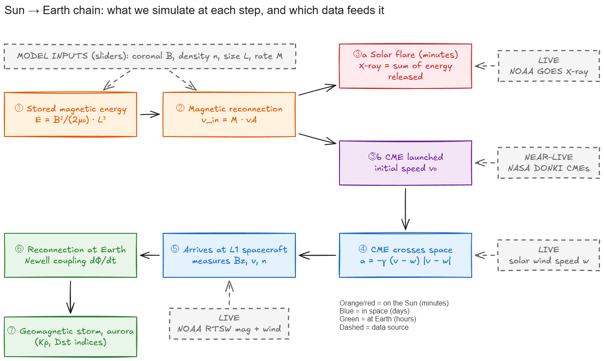
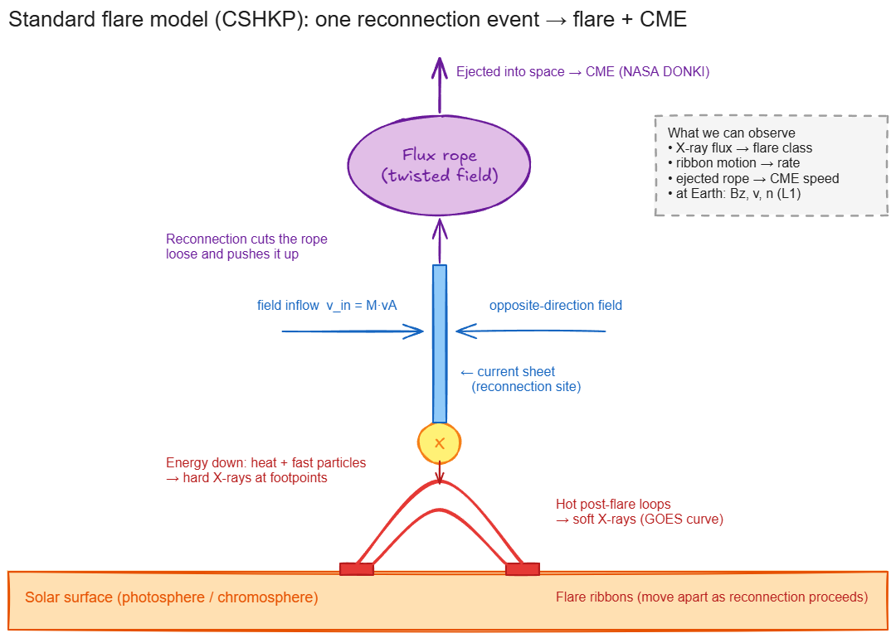
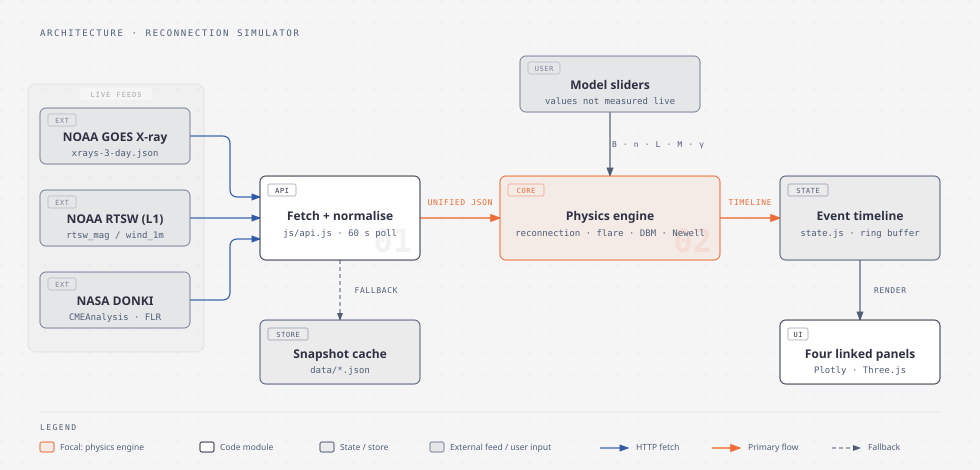
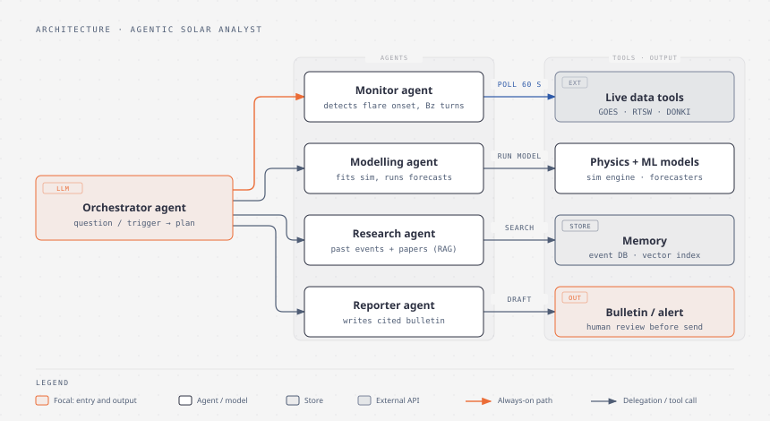

How the Sun turns magnetism into explosions, simulated live
This guide explains, from zero, the physics behind solar flares and coronal mass ejections (CMEs), and how this project simulates the whole chain using real data from NOAA and NASA satellites.
The Sun is covered in magnetic fields that get twisted like rubber bands. When two oppositely pointing field lines are squeezed together, they suddenly snap and re-join. This is called magnetic reconnection. The snap releases huge energy in minutes:
⬇ energy going down heats the surface into a flare (a flash of X-rays) · ⬆ the magnetic bubble going up is thrown into space as a CME. If the CME hits Earth with the right magnetic orientation, it reconnects again with Earth's field, causing storms and aurora.
The Sun right now
Each value is labelled with where it comes from: Live measured in real time · Catalogue analysed by NASA within hours · Model calculated by our simulator.
The whole story in one picture

Orange stages happen on the Sun (minutes), blue in space (days) and green at Earth (hours). Dashed boxes show which live data feeds each stage.
How to read this guide
| If you want to… | Read |
|---|---|
| Understand why this project exists | 01 The problem |
| Learn the science step by step (no background needed) | 02 → 03 → 04 → 05 → 06 |
| Understand what the application does, stage by stage | 07 How the application works |
| Look up a symbol or formula | 08 Variables & formulas |
| Start building | 09 Data, 10 Roadmap |
| Find a research or ML project to build on top | 11 Future scope |
Every chart is interactive: hover for values, drag to zoom, double-click to reset. Pages 02–06 have sliders, so change a number and watch the physics respond.
Why simulate magnetic reconnection?
The most important process in space weather cannot be seen directly, and the evidence it leaves behind is scattered across agencies in formats that are hard to read.
One event, three waves of impact
All three start with a single reconnection event on the Sun.
What makes it hard
Problem statement
Build a live, interactive simulator that explains and models the chain from magnetic reconnection on the Sun to flares, CMEs and their effect on Earth. Drive every stage with real-time satellite data where a measurement exists, use transparent physics models where it doesn't, and label clearly which is which, so that a beginner can understand the event and a researcher can reuse the data.
Goals
- Explain reconnection visually: inflow, X-point, outflow.
- Measure what can be measured live: flare X-rays, solar wind and the magnetic field at L1.
- Infer what can't be seen: the reconnection rate, hidden inside the flare curve.
- Link the stages in time: reconnection → flare → CME launch → CME trip → Earth coupling.
- Let people experiment with sliders for things no one can measure in real time.
- Produce a clean event dataset that ML, LLM and agent projects can build on (page 11).
Who it is for
| User | What they need from it |
|---|---|
| Beginners & students | An intuitive answer to "why does a flare happen, and why should I care?" |
| Educators | A live classroom demo tied to today's Sun |
| Data scientists | A tidy, labelled, time-aligned event dataset |
| Researchers | Quick "what if" checks: arrival time, coupling strength |
| Aurora watchers | "Is something coming, and when?" |
Scope of version 1
✓ 2D reconnection animation and rate models
✓ Live GOES flare curve and reconnection proxy
✓ Model of CME launch linked to the flare
✓ CME arrival time using live solar wind
✓ Live Earth coupling and storm estimate
✓ Export of the linked event timeline
✗ Full 3D magnetohydrodynamic simulation
✗ Official forecasts or warnings
✗ Solar image processing (SDO/SOHO)
✗ Predicting the CME's internal Bz
✗ Ground effects (grid currents)
How we'll know it works
| Criterion | Measure |
|---|---|
| Correct physics | Reproduces every worked example on page 08 within 1% |
| Live | Updates within 2 minutes of new NOAA data |
| Understandable | A beginner can explain the chain after 5 minutes with the tool |
| Honest | Every number carries a Live / Catalogue / Model label |
| Reusable | One-click export of the linked timeline (JSON/CSV) |
The Sun's magnetic engine
Before anything explodes, energy has to be stored. On the Sun it is stored in twisted magnetic fields.
Plasma: the fourth state of matter
The Sun's outer atmosphere, the corona, is at 1–2 million °C. At that temperature atoms are ripped apart into charged ions and electrons. This is called plasma. Because plasma is made of charged particles, it conducts electricity extremely well, and so it is tied to magnetic fields.
In a plasma, field lines behave like strings and the plasma like beads threaded on them. Beads can slide along a string but can't jump to another one. Physicists call this "frozen-in" flux. It's why the plasma in the corona traces out the magnetic field in beautiful loops.
Who is in charge: gas or magnetism?
Compare the pressure of the hot gas with the "pressure" of the magnetic field. Their ratio is called plasma beta (β):
Winding up the rubber band
Sunspots are the footpoints of strong magnetic fields. As they move, rotate and emerge, the field above them gets twisted and sheared, like winding up a rubber band. The energy stored in the field is:
Stored energy against field strength for four region sizes. The black dot is your calculator setting. Dotted lines mark the rough energy of C, M and X-class flares. Only 10–30% of the stored energy is "free" to be released.
The flux rope: a loaded spring
The twisted field often organises into a flux rope: a tube of helical field lines, often visible as a dark filament or prominence. It is held down by the arching field above it, the strapping field. As more twist is added, the rope pushes harder upward. Eventually the balance breaks and the rope starts to rise. What happens next is reconnection.

The standard flare model (CSHKP, after Carmichael, Sturrock, Hirayama, Kopp and Pneuman). The rising flux rope stretches the field below it into a thin current sheet, where reconnection happens.
The Sun stores flare energy in twisted magnetic fields (E ∝ B²L³). The field dominates the plasma (β ≪ 1). When a flux rope loses balance and rises, it sets up the conditions for reconnection.
Magnetic reconnection: the snap
Reconnection is how magnetic energy becomes heat, fast particles and motion. It powers flares, CMEs, aurora and even fusion-reactor disruptions.
What happens
Under the rising flux rope, field lines pointing up on one side and down on the other are pushed together into a thin current sheet. There, and only there, the "frozen-in" rule breaks down. The field lines break and re-join in a new shape, crossing at an X-point. The newly joined lines are sharply bent, and magnetic tension straightens them like a slingshot, flinging plasma out at enormous speed.
Blue lines are the incoming field, pushed together from the left and right. At the centre they reconnect and leave as orange lines, shooting up (towards the CME) and down (towards the flare). The slider sets how fast field is processed.
Three numbers that describe reconnection
The 50-year puzzle: why so fast?
The first theory (Sweet–Parker, 1957) predicted M = S−½. With S ≈ 10¹⁴ that gives M ≈ 10⁻⁷, so a flare would take years. Real flares take minutes. Newer theories solve this: Petschek's shock-bounded outflow, and today's leading picture, in which the current sheet shatters into many small magnetic islands (plasmoids) and turbulence. That makes M ≈ 0.01 no matter how large S is.
Predicted reconnection rate against the Lundquist number. The green band is what flare observations show. The markers show your region from page 02 (change B, L, n or T there).
Where does the energy go?
Reconnection breaks and re-joins field lines at an X-point, converting magnetic energy at a rate set by M × vA. "Fast" reconnection (M ≈ 0.01–0.1) releases a flare's energy in minutes. The rate M is the hidden quantity our simulator tries to estimate from the data.
The flare: energy going down
Half the story of reconnection goes downward. It lights up the Sun's surface and sends an X-ray flash to Earth in 8 minutes.
What happens, in four steps
Flare classes: the Richter scale of the Sun
Each letter is 10× stronger than the one before. The number is a multiplier: 3.1 × 10⁻⁶ W/m² = C × 3.1 = C3.1.
Live: the Sun's X-ray output
The Neupert effect: seeing the hidden engine
In 1968 Werner Neupert noticed that the soft X-ray curve looks like the running total of the hard X-ray bursts. That makes sense: soft X-rays come from plasma that accumulates the injected energy, while hard X-rays trace the energy release right now. So:
Simulate one eruptive event
Our model connects the pieces. A reconnection pulse releases energy, the X-ray loops fill and then cool (time constant τ), and the CME is pushed upward while reconnection runs.
Model, not data. ① The reconnection pulse drives ② the X-ray rise. ③ CME acceleration peaks at the same moment as the X-ray rise, not the X-ray peak, as observed by Zhang et al. (2001). ④ The CME then coasts. The dashed line marks the steepest X-ray rise.
The flare is the downward half of reconnection. GOES shows it live. The slope of the GOES curve (Neupert effect) reveals when and how hard reconnection is working. This is how we "see" the invisible engine.
The CME: energy going up, and its 150-million-km trip
The other half of reconnection goes upward. It cuts the flux rope loose and throws a billion tonnes of magnetised plasma into space.
Launch
Reconnection under the flux rope does two things at once: it cuts the tethers holding the rope down, and it wraps new flux around the rope, pushing it up. So the CME accelerates hardest exactly while the flare is brightening fastest. After roughly 10–60 minutes reconnection fades, and the CME coasts outward at 300–3,000 km/s.
NASA's space weather office measures each CME's speed, direction and width from coronagraph images and publishes them in the DONKI catalogue.
The journey: a tug-of-war with the solar wind
Space isn't empty. The Sun constantly blows a solar wind at 300–800 km/s. Beyond about 20 solar radii the CME's own push is gone, and the only force left is drag from that wind, like a car coasting into air resistance:
The faster the CME moves relative to the wind, the harder the wind pushes back (drag grows with the square of the speed difference). So fast CMEs lose speed quickly at first, then settle close to the wind speed.
Top: speed. Bottom: distance from the Sun; the dot marks arrival at Earth (1 AU). The dashed "no-drag" line shows how wrong you'd be if you ignored the solar wind.
The CME is the upward half of reconnection. Its launch speed comes from the Catalogue. Its journey is shaped by drag from the Live solar wind. The drag-based model turns those two numbers into an arrival time, typically 1–4 days.
Arrival at Earth: reconnection, again
Earth has its own magnetic shield. Whether a CME causes a storm depends almost entirely on one thing: which way its magnetic field points.
The early-warning post at L1
Not to scale. Spacecraft at L1 (DSCOVR, ACE, SWFO-L1) sample the solar wind before it hits Earth. NOAA publishes this every minute as RTSW.
Why "Bz" is the most watched number in space weather
On its day side, Earth's magnetic field points north. If the incoming field (the IMF, interplanetary magnetic field) points south (Bz < 0), the two are antiparallel, exactly like the two sides of the current sheet on the Sun. They reconnect, opening the shield and letting solar wind energy pour in. Northward IMF barely couples at all.
Think of Earth's field as a door that only unlocks when the key is turned south. The CME's speed decides how hard it pushes, but Bz decides whether the door opens.
Measuring Earth's reconnection rate: Newell coupling
How much of the field can reconnect, by clock angle. Coupling is almost zero for northward IMF and maximal for southward. The dot shows your slider setting.
Live: is Earth being driven right now?
From coupling to a storm
Energy pumped in by reconnection builds a ring current of particles around Earth that weakens the ground-level magnetic field. The Dst index measures this: the more negative, the bigger the storm. A simple model (Burton et al., 1975):
At Earth the same physics repeats: southward Bz → reconnection → energy in → storm. The Newell coupling is Earth's live reconnection rate, and every input to it is measured in real time.
How the application works, stage by stage
This page follows the application from raw satellite numbers to a complete, explained event. At each stage: what question it answers, what goes in, what it does (in plain words) and what comes out. It describes the problem each stage solves, not the code.
Collect the evidence
"What is the Sun doing, and what has already left it?"
Clean and align
"Can these numbers be trusted and compared on one clock?"
Detect flare events
"When did the Sun flare, and how big was it?"
Reveal the hidden reconnection
"How hard was reconnection working, moment by moment?"
Link the flare to its CME
"Did this flare launch a CME, and how fast?"
Send the CME across space
"Is it heading our way, and when will it arrive?"
Evaluate the coupling at Earth
"Is Earth's magnetic shield open right now, and how wide?"
Explain it as one story
"What happened, in words anyone can follow?"
Export the event record
"Can someone else learn from this event?"
Follow today's Sun through the flow
The same nine stages, run on the data loaded into this page:
Loading…
Where uncertainty enters
| Stage | Main uncertainty | How we handle it |
|---|---|---|
| Reveal reconnection | Coronal B, n and L are not measured live | Sliders with realistic ranges; show a band, not a line |
| Link flare → CME | Timing overlaps, many confined flares | Show the match confidence; allow "no CME" |
| Send CME across space | Drag γ varies 10× between events | Run the γ range → arrival window |
| Coupling at Earth | The CME's own Bz is unknown until it reaches L1 | Present scenarios (north vs south) until it arrives |
Every variable and formula
Each symbol used in the project: what it means in plain words, its formula, unit, typical values, where the number comes from, and a worked example. The examples use the reference case below and were checked numerically.
| Reference case | Value |
|---|---|
| Coronal field B · density n · temperature T · size L | 100 G · 10⁹ cm⁻³ · 10⁶ K · 30 Mm |
| Solar wind (live, 28 Sep 2026) | v = 344 km/s · n = 2.0 cm⁻³ · By = 2.8 nT · Bz = −1.11 nT |
| Unit conversions | 1 G = 10⁻⁴ T · 1 nT = 10⁻⁹ T · 1 J = 10⁷ erg · 1 Wb = 10⁸ Mx · 1 Mm = 1,000 km · 1 AU = 1.496 × 10⁸ km · R☉ = 695,700 km |
Where the numbers come from
All sources are free and public. Three of them are real-time and used by the application now. The rest are archives for validation and ML (page 11).
Real-time feeds (used by the app)
| Feed | Endpoint | Key fields | Cadence | Label |
|---|---|---|---|---|
| GOES X-ray flux | services.swpc.noaa.gov/json/goes/primary/xrays-3-day.json (also 6-hour, 1-day, 7-day) | time_tag, flux, energy ("0.1-0.8nm" = flare band) | 1 min | Live |
| GOES flare list | …/json/goes/primary/xray-flares-7-day.json, xray-flares-latest.json | begin_time, max_time, end_time, max_class | per event | Live |
| L1 magnetic field | services.swpc.noaa.gov/json/rtsw/rtsw_mag_1m.json | bt, bx_gsm, by_gsm, bz_gsm, active | 1 min | Live |
| L1 solar wind plasma | services.swpc.noaa.gov/json/rtsw/rtsw_wind_1m.json | proton_speed, proton_density, proton_temperature, active | 1 min | Live |
| DONKI CME analysis | api.nasa.gov/DONKI/CMEAnalysis | time21_5, speed, latitude, longitude, halfAngle | hours after launch | Catalogue |
| DONKI flares / shocks / storms | api.nasa.gov/DONKI/FLR, /IPS, /GST | Linked events (flare ↔ CME ↔ shock ↔ storm) | hours | Catalogue |
Things a beginner should know about these feeds
- The old solar-wind URLs are gone.
/products/solar-wind/plasma-1-day.jsonandmag-1-day.jsonnow return 404 (checked 28 Sep 2026). Use the/json/rtsw/feeds above. The archived dashboard inlegacy/dashboard/js/config.jsstill points at the old ones. - RTSW lists several spacecraft. Keep only rows with
active: true. Rows are newest first, and times have no "Z" but are UTC. - GOES eclipse season. Around the March and September equinoxes GOES passes through Earth's shadow daily, giving short, sharp dropouts. They are not solar events.
- DONKI rate limit. The
DEMO_KEYallows only about 10 requests per hour. Get a free key at api.nasa.gov. - CORS is fine. All feeds send
Access-Control-Allow-Origin: *, so a browser can fetch them directly with no proxy. - Coordinates. Use GSM components (
*_gsm) for Earth coupling. In GSM, z follows Earth's magnetic axis, so "Bz < 0" really means "antiparallel to Earth's field".
Archives for validation and ML
| Dataset | What's in it | Use |
|---|---|---|
| NOAA NCEI GOES XRS archive | X-ray flux since 1975, science-quality | Flare training data |
| SWPC event reports / GOES flare lists | Every flare with times and class | Labels |
| SDO/HMI SHARP (JSOC) | ~20 magnetic parameters per active region, every 12 min since 2010 | Flare-forecast features |
| RibbonDB (Kazachenko et al. 2017) | Reconnection flux from ribbons for 3,000+ flares | Ground truth for the reconnection estimate |
| OMNIWeb (NASA) | Solar wind at Earth's nose, 1-min and hourly, since 1963 | Coupling and storm models |
| Kyoto WDC Dst · GFZ Kp | Storm indices | Storm labels |
| Richardson & Cane ICME list · CCMC CME Scoreboard | Observed CME arrivals, and forecasts from many models | Arrival-time validation |
Development roadmap
Built in small phases, each one useful on its own. Every phase ends with something a beginner can see and a check that the physics is right.

The physics engine (orange) is the heart. Live feeds and user sliders go in, and a single event timeline comes out, feeding the four panels.
Phase 0 · Reliable data foundation
Fetch the three live feeds, clean and align them, and fall back to a saved snapshot. Every value gets a Live / Catalogue / Model label.
Done when: the page shows data freshness and survives a feed outage.
Phase 1 · Explain reconnection
X-point animation, energy calculator and reconnection-rate models (pages 02–03).
Done when: the calculator reproduces the worked examples on page 08.
Phase 2 · Live flare and hidden engine
GOES curve, flare detection and classification, Neupert proxy, event model.
Done when: detected flares match the NOAA flare list (start/peak within 2 min, same class).
Phase 3 · CME journey
DONKI ingestion, flare–CME matching, drag-based arrival with a γ-range window.
Done when: for past Earth-hitting CMEs, the arrival error is comparable to the published DBM performance (roughly ±10–15 h).
Phase 4 · Earth coupling
Clock angle, Newell coupling, magnetopause distance, Burton Dst estimate.
Done when: modelled Dst tracks the Kyoto Dst for 5 historical storms.
Phase 5 · One linked story
Four synchronised panels, event selection, written summary, JSON/CSV export.
Done when: a new user can explain one event end-to-end in 5 minutes.
Phase 6 · Intelligence layer
First ML model and LLM explainer (page 11) built on the exported dataset.
Done when: a model beats its physics baseline on held-out events.
How we validate the physics
| Model | Compare against | Metric |
|---|---|---|
| Reconnection estimate (Neupert + cooling) | RibbonDB reconnection flux; hard X-ray data (Solar Orbiter STIX) | Correlation of peak times and totals |
| Flare detection | NOAA GOES flare list | Precision / recall; timing error |
| Drag-based arrival | ICME arrival lists; CCMC CME Scoreboard | Mean absolute error (hours) |
| Coupling → Dst | Kyoto Dst | RMSE; storm peak timing |
What you can build on top: 15 problem statements
The simulator produces a clean, physics-labelled event timeline. That is exactly what's missing for machine learning, language models and autonomous agents that study the Sun. Each card below is a ready-to-start project.
What an agentic system could look like

An orchestrator receives a question ("Is anything heading for Earth?") or a trigger (a flare onset). It delegates to specialist agents. Each agent uses one tool, and the final bulletin is reviewed by a human before release. The simulator from this project is the "Physics + ML models" tool.
Beginners: #2 flare peak nowcast or #8 live anomaly detection (small data, quick feedback). Intermediate: #5 hybrid arrival-time model. Advanced: #3 hidden reconnection inversion or #13 autonomous solar monitor.
Glossary & references
- Active region
- An area of strong, complex magnetic field around sunspots, where flares happen.
- Alfvén speed (vA)
- The speed of magnetic waves in plasma, B/√(μ₀ρ). The speed limit for reconnection outflows.
- AU (astronomical unit)
- The mean Sun–Earth distance, 149.6 million km.
- Bz
- The north–south component of the interplanetary magnetic field. Negative (southward) values let it reconnect with Earth's field.
- Clock angle (θ)
- The direction of the IMF in the plane facing the Sun: 0° north, 180° south.
- CME (coronal mass ejection)
- A huge cloud of magnetised plasma (about a billion tonnes) ejected from the Sun.
- Corona
- The Sun's outer atmosphere, at 1–2 million °C, visible during eclipses.
- CSHKP model
- The "standard" model of eruptive flares: a rising flux rope, a current sheet below it, and reconnection producing both flare and CME.
- Current sheet
- A thin layer where the magnetic field reverses direction and electric current flows. This is where reconnection happens.
- DONKI
- NASA's Space Weather Database Of Notifications, Knowledge, Information: a catalogue of flares, CMEs, shocks and storms.
- Drag-based model (DBM)
- A model of CME travel where the only force is drag from the solar wind.
- Dst index
- A storm-strength index (nT) from ground magnetometers. More negative means a stronger storm.
- Flare ribbons
- Two bright strips on the solar surface marking the footpoints of newly reconnected loops. They move apart as a flare progresses.
- Flux rope
- A twisted bundle of magnetic field lines. It becomes the core of a CME.
- Frozen-in flux
- In a highly conducting plasma, field lines and plasma move together. Reconnection is where this breaks down.
- GOES
- NOAA's geostationary satellites, whose X-ray sensors define flare classes.
- GSM coordinates
- Geocentric Solar Magnetospheric: x points to the Sun, z along Earth's magnetic axis. The natural frame for Earth coupling.
- IMF
- Interplanetary magnetic field: the Sun's field carried outward by the solar wind.
- L1
- A balance point 1.5 million km sunward of Earth, where monitoring spacecraft sit and give 30–60 min of warning.
- Lundquist number (S)
- L·vA/η: how ideal a plasma is. It is enormous in the corona (about 10¹⁴).
- Magnetopause
- The boundary of Earth's magnetic shield, about 10 Earth radii sunward.
- Magnetic reconnection
- The breaking and re-joining of oppositely directed field lines, which converts magnetic energy into heat, particles and flows.
- Neupert effect
- Soft X-ray flux ≈ the running total of hard X-ray flux, so the slope of the soft X-ray curve traces energy release.
- Newell coupling
- v^(4/3)·B_T^(2/3)·sin^(8/3)(θ/2): the best simple estimate of Earth's dayside reconnection rate.
- Plasma
- Gas so hot its atoms are split into ions and electrons. It conducts electricity and is tied to magnetic fields.
- Plasma beta (β)
- Gas pressure divided by magnetic pressure. β ≪ 1 means the field dominates.
- Plasmoid
- A magnetic island formed when a long current sheet breaks up. Plasmoids make reconnection fast.
- RTSW
- NOAA's Real-Time Solar Wind data from L1 spacecraft.
- NOAA scales (R, S, G)
- Radio blackout (flares), Solar radiation storm (particles) and Geomagnetic storm (CMEs), each from 1 (minor) to 5 (extreme).
References
- Priest, E. & Forbes, T. (2000). Magnetic Reconnection: MHD Theory and Applications. Cambridge University Press.
- Qiu, J. et al.: reconnection rates from flare ribbons. See e.g. Magnetic Reconnection Rates and Energy Release in a Confined X-class Flare (arXiv:1509.07089).
- Kazachenko, M. et al. (2017). A Database of Flare Ribbon Properties from SDO. I. Reconnection Flux. ApJ 845, 49.
- The Roles of Reconnected Flux and Overlying Fields in CME Speeds (arXiv:1504.02905).
- On the Magnetic Reconnection and its Properties during a Flare Using an MHD Simulation (arXiv:2505.11186).
- Neupert, W. M. (1968). Comparison of solar X-ray line emission with microwave emission during flares. ApJ 153, L59.
- Zhang, J. et al. (2001). On the temporal relationship between CMEs and flares. ApJ 559, 452.
- Vršnak, B. et al. (2013). Propagation of interplanetary CMEs: the drag-based model. Solar Physics 285, 295. See also CCMC DBM description, DBM parameter distributions (arXiv:2201.12049) and Drag-Based Ensemble Model (ApJ).
- Newell, P. T. et al. (2007). A nearly universal solar wind–magnetosphere coupling function. JGR 112, A01206.
- Shue, J.-H. et al. (1998). Magnetopause location under extreme solar wind conditions. JGR 103, 17691.
- Burton, R. K., McPherron, R. L. & Russell, C. T. (1975). An empirical relationship between interplanetary conditions and Dst. JGR 80, 4204.
- NOAA SWPC data services: services.swpc.noaa.gov/json · NASA DONKI: kauai.ccmc.gsfc.nasa.gov/DONKI.